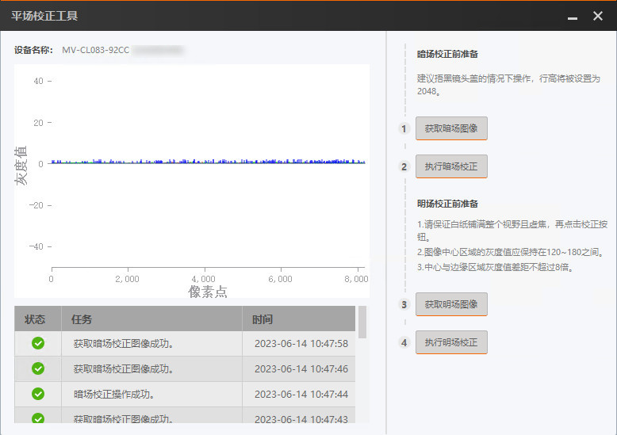
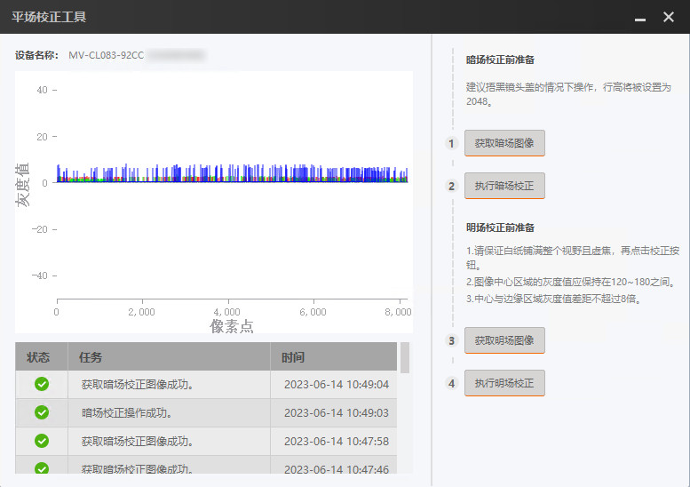
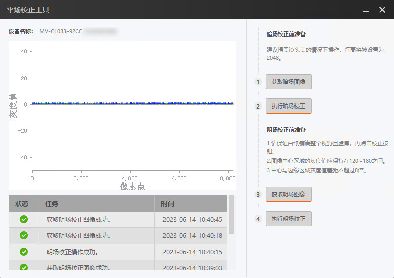
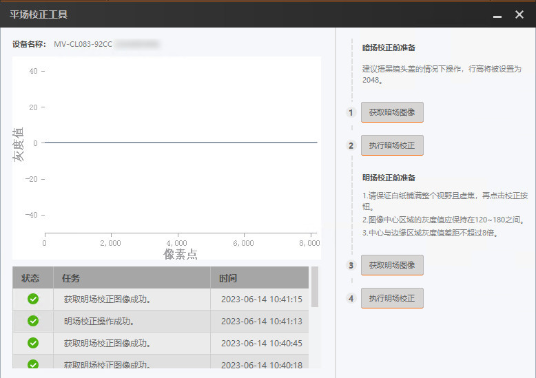

平场校正工具（本手册简称为“工具”）可获取线阵相机明/暗场校正前后的图像，并显示明/暗场校正前后图像的灰度曲线图。目前支持的线阵相机接口类型包括GigE口、Camera
Link口和万兆光口。
-
按照暗场校正前准备下方的提示语进行相关准备工作。
-
点击工具右侧的获取暗场照片，获得暗场校正前的图像，此时工具左侧显示该图像的灰度曲线图，工具下方信息显示框显示执行结果以及时间。

图 1 获取暗场校正前图像
-
返回MVS 客户端进行暗场校正参数设置。
-
点击执行暗场校正进行校正，获得暗场校正后的图像，此时工具左侧显示该图像的灰度曲线图，工具下方信息显示框显示执行结果以及时间。

图 2 获取暗场校正后图像
-
按照明场校正前准备下方的提示语进行相关准备工作。
-
点击获取明场照片，获得明场校正前的图像，此时工具左侧显示该图像的灰度曲线图，工具下方信息显示框显示执行结果以及时间。

图 3 获取明场校正前图像
-
返回MVS 客户端进行明场校正参数设置。
-
点击执行明场校正进行校正，获得明场校正后的图像，此时工具左侧显示该图像的灰度曲线图，工具下方信息显示框显示执行结果以及时间。

图 4 获取明场校正后图像